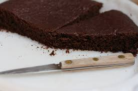

Home
Chocolate Cake

Description
This classic French chocolate cake is a rich and indulgent treat that is incredibly simple to make. With a dense, fudgy texture and an intense chocolate flavour, it is the perfect dessert for any chocolate lover. Best served at room temperature, it can also be enjoyed warm with a scoop of vanilla ice cream.
Ingredients
For 6 people:
- 200g of dark baking chocolate
- 100g of butter + a knob for the tin
- 50g of flour
- 3 eggs
- 100g of caster sugar
Steps
- Preheat your oven to 180°C (Gas Mark 6). In a saucepan, melt the chocolate and the butter cut into pieces over very low heat.
- In a mixing bowl, add the sugar, eggs and flour. Mix together.
- Add the chocolate/butter mixture. Mix well.
- Butter and flour your tin using a piece of paper towel, then pour in the cake batter.
- Bake in the oven for approximately 20 minutes.
- When taken out of the oven, the cake may appear undercooked. This is normal — let it cool down before turning it out of the tin.